Fundamentals of Electric Circuits¶
The source textbook is the Fundamentals of Electric Circuits,The Seventh Edition, written by Charles Alexander and Matthew Sadiku. The index of this note are not following the same number of the textbook.
1: Basic Concepts¶
Passive sign convention¶
- Passive sign convention is the convention we commonly used, which is satisfied when the current enters through the positive terminal (+)of an element. For the voltage analysis (eg. mesh analysis), if we follow a vested direction (mostly clockwise) of a loop, if the direction arrow enter the positive terminal (+) of a element, that voltage will be marked as '+' and vice versa.
- For example, the 5 V source in the Loop 1 should be marked as '-' as the following image. 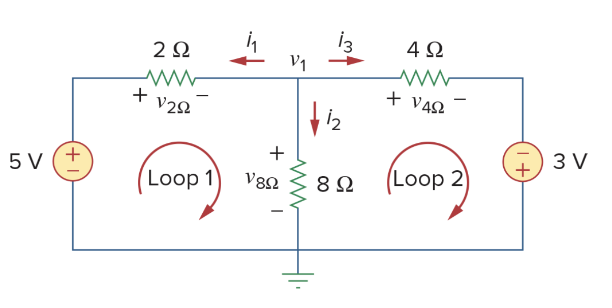
Type of the Sources¶
- Ideal Independent sources is an active elements(could generate power) that provides a specified voltage or current is completely independent of other elements. We use the 'circled sources' refer to independent sources.
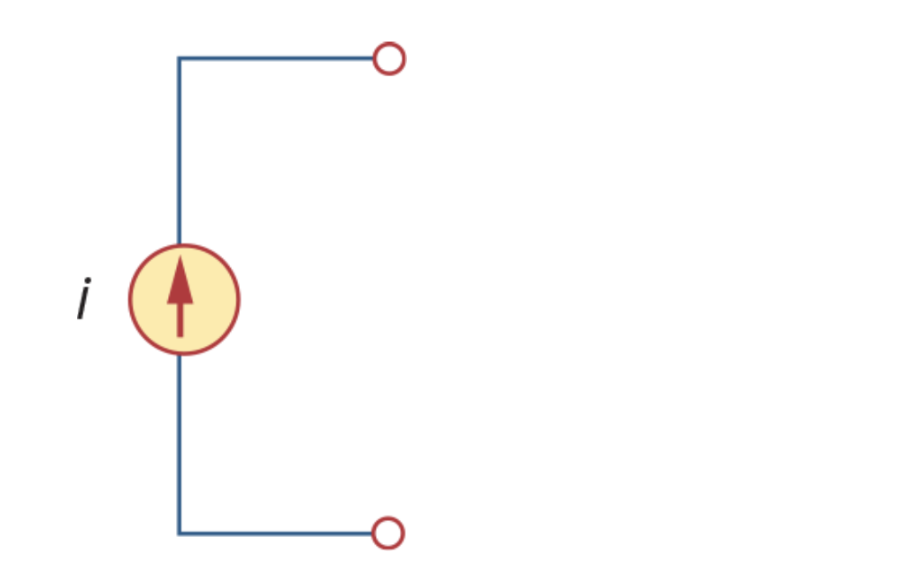
- Ideal dependent (controlled) source is an active element in which the source quantity is controlled by another voltage or current. There are four types of dependent sources, namely: VCVS (voltage-controlled voltage source), CCVS, VCCS, CCCS. We use the 'diamond-shaped symbols' refer to dependent source.
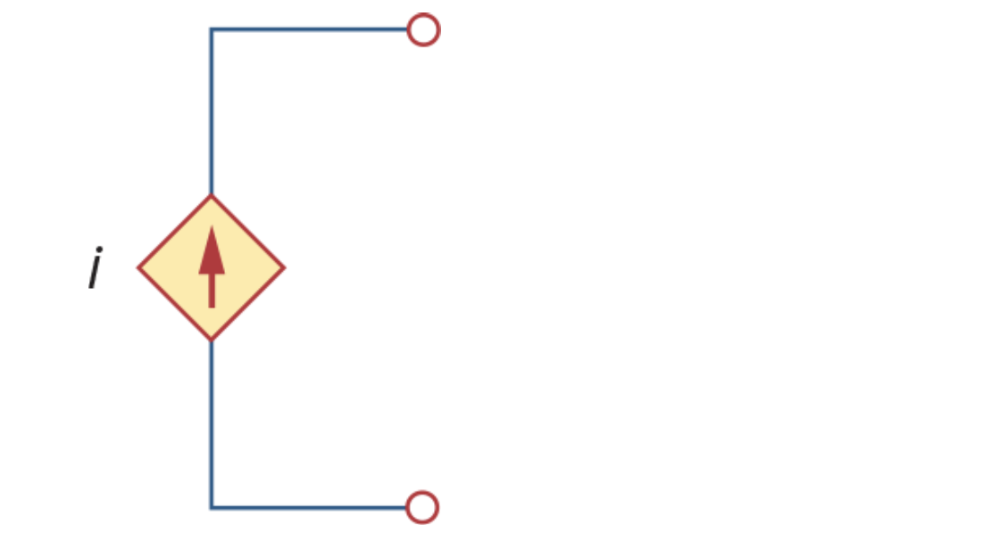
2: Basic Laws¶
Ohm's Law & Conductance¶
- Ohm's Law which is \(v\propto i\), or more commonly \(v=iR\). The unit of resistance is Ohm.
- A useful quantity in circuit analysis is the reciprocal of resistance \(R\), Conductance,\(G=\frac{1}{R}\). The unit of the conductance is mho (\(\mho\)) or Siemens (\(S\)).
Nodes, Branches, and Loops¶
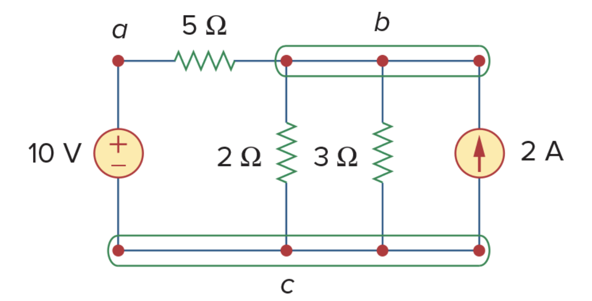
- A branch represents a single element such as a voltage source or a resistor. Such as the 10-V voltage source, the 2-A current source and three resistors.
- A node is the point of the connection between two or more branches.(the point with same electric potential).
- A Loop is a closed path formed by starting at a node. A loop is said to be independent if it is a single circle which doesn't contain another loop. (a brief understanding) The circuit in the graph have 3 independent loops for example.
- According to the topology, we have \(*b=l+n-1*\).
Series and parallel¶
- Two or more elements are in series if they exclusively share a single node and consequently carry the same current.
- Two or more elements are in parallel if they are connected to the same two nodes and consequently have the same voltage across them.
Kirchhoff's Laws¶
- Kirchhoff's current Law states that the algebraic sum of currents entering a node is zero.
- Kirchhoff's voltage Law states that the algebraic sum of all voltages around a closed loop is zero.
Wye-Delta Transformations¶
- Wye-Delta Transformation is used to convert 'Y' or 'T' networks and '\(\Delta\)' or '\(\Pi\)' each other.
| 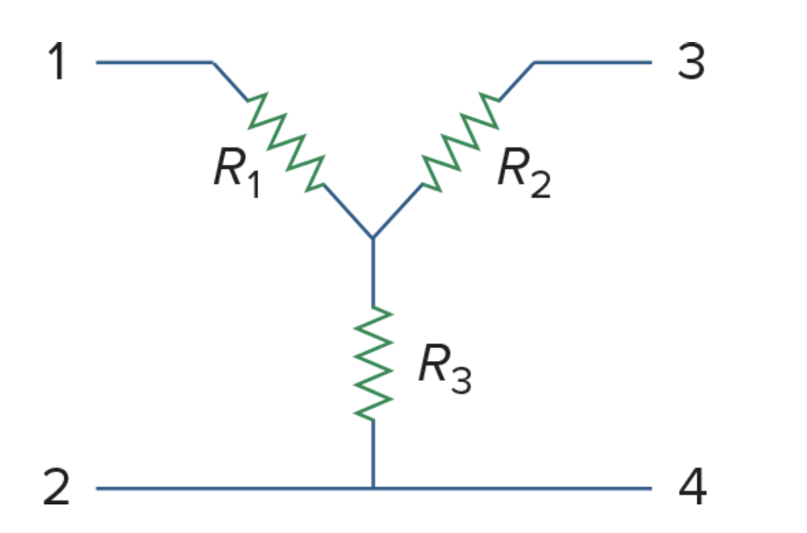 |  |
|---|---|
- Normally we use the graph below to do the conversion between 'Wye' and 'delta'.
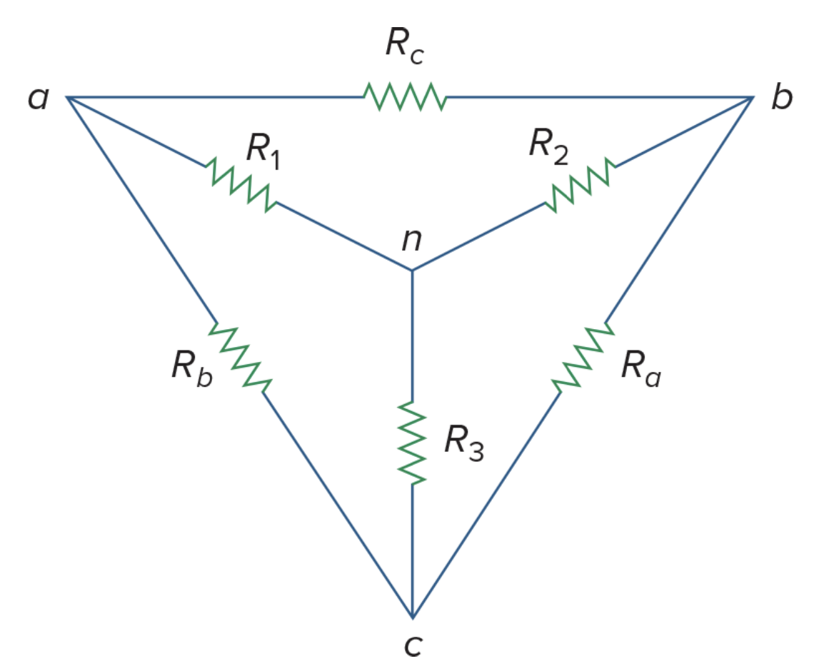
- Note the rule that \(R_1\) faces to the \(R_a\) and same for other two resisters.(use alphas for 'delta' and digits for 'Wye')
- For the Delta to Wye conversion:
- \(R_1=\frac{R_bR_c}{R_1+R_b+R_c}\)
- \(R_2=\frac{R_cR_a}{R_a+R_b+R_c}\)
- \(R_3=\frac{R_aR_b}{R_a+R_b+R_c}\)
- For the Wye to Delta conversion:
- \(R_a=\frac{R_1R_2+R_2R_3+R_3R_1}{R_1}\)
- \(R_b=\frac{R_1R_2+R_2R_3+R_3R_1}{R_2}\)
- \(R_c=\frac{R_1R_2+R_2R_3+R_3R_1}{R_3}\)
- When \(R_1=R_2=R_3\), we say the network is balanced.
3: Methods of Analysis¶
Nodal Analysis¶
- Nodal Analysis is a general method to analyze the circuits which using the nodal voltages as variables, so it is also known as node-voltage method.
- The Step of nodal analysis:
- Determine a reference node which could be treated as ground.
- Apply KCL to each of the non-reference nodes, then use Ohm's Law to express the current in nodal voltages.
- Solve the Simultaneous Equations.
- Nodal analysis with voltage sources:
- When voltage source is connected between the reference node and a non-reference node, simply set the voltage at the no-reference node equal to the voltage of the voltage source as the '10 V' source in the picture below.
- When voltage source is between two non-reference nodes, which form a supernode(as the '5 V' source below) we use both KCL and KVL on the supernode: \(i_1-i_2+i_4-i_3=0\), then use the KVL between the supernode and the ground (a loop): \(-v_2+5+v_3=0\).
| 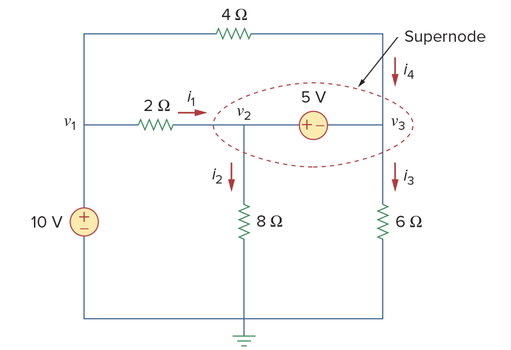 | 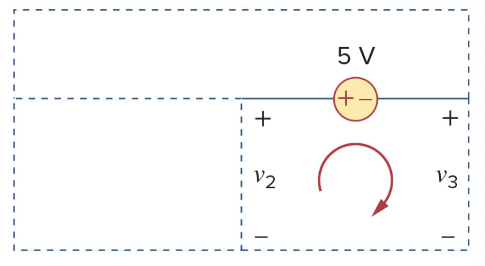 |
|---|---|
Mesh Analysis¶
- Mesh analysis is also known as loop analysis, which focus on the mesh, (i.e.a independent loop). The mesh analysis is only available to a circuit that is a planar (a topology term, means can be redraw with non branches crossing one another).
- For example, there are two meshes on the picture below.
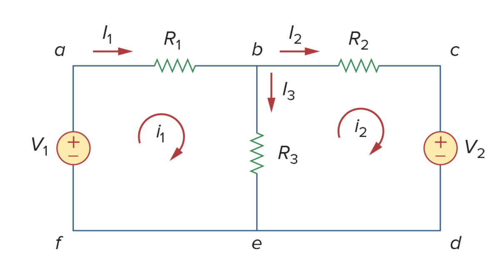
- Steps to determine the mesh current:
- Assign mesh current of the each mesh as the picture above. (Note that the direction of the current is arbitrary)
- Apply KVL to the meshes, use Ohm's Law to express the voltage in terms of the mesh current.
- Solve the equations.
- Mesh Analysis with Current Sources:
- The presence of the current sources will reduce the equations.
- When a current source exists only in one mesh, such as the left picture below, set \(i_2=5\) A and write the other mesh in usual way.
- When a current source exists between the two meshes, such as the right picture below, we will create a supermesh, which means two meshes have a (dependent or independent) current source in common.
| 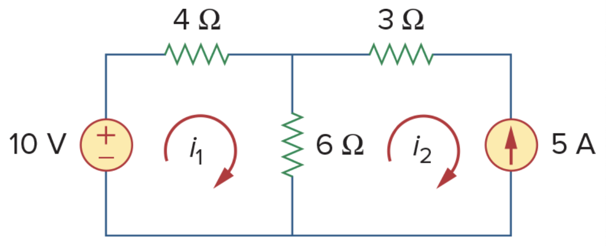 | 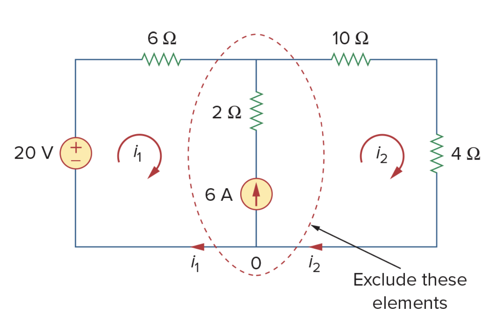 |
|---|---|
- When dealing with the supermesh, we can omit the branch with the current source, as the picture below, then apply the KVL of the new loop as \(-20+6i_1+10i_2+4i_2=0\) and KCL to node in the branch when two meshes intersect as \(i_2=i_1+6\), the answer will be apparent.
- Three meshes can also create a large supermesh.(the right schematic)
| 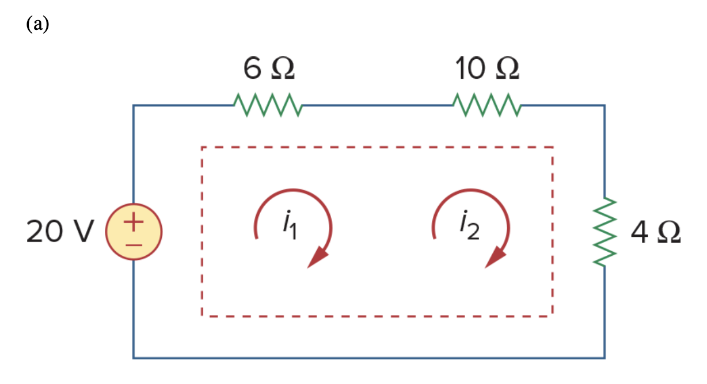 | 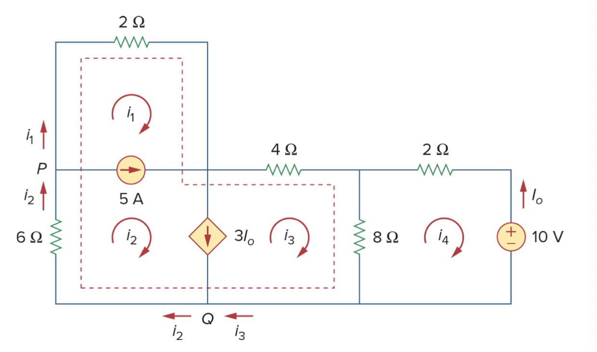 |
|---|---|
Nodal and Mesh Analysis by inspection¶
- When all the sources in a circuit are independent current sources, we have a easier way to get the matrix form of the equations.
- We can use the formula \(Gv=i\) to generate the conductance matrix, such as:
\[
\left(\begin{array}{cccc}
G_{11} & G_{12} & \cdots & G_{1N} \\
G_{21} & G_{22} & \cdots & G_{2N} \\
\vdots & \vdots & \vdots & \vdots \\
G_{N1} & G_{n2} & \vdots & G_{NN}
\end{array}\right)\left(\begin{array}{cccc}
v_1 \\
v_2 \\
\vdots \\
v_N
\end{array}\right)=\left(\begin{array}{cccc}
i_1 \\
i_2 \\
\vdots \\
i_N
\end{array}\right)
\]
-
In the formula above:
- \(G_{kk}\)= Sum of the conductances connected to node k.
- \(G_{kj}=G_{jk}=\) Negative of the sum of the conductances of directly connecting nodes \(k\) and \(j\).
- \(v_k\)= Unknown voltage at node \(k\)
- \(i_k=\) Sum of all independent current sources directly connected to node \(k\), with current entering the node treated as positive.
-
When a linear resistive circuit has only independent voltage sources, we can obtain the mesh equations by inspections.
- We can generate the resistance matrix using the formula \(Ri=v\), such as:
\[
\left[\begin{array}{cccc}
R_{11} & R_{12} & \cdots & R_{1N} \\
R_{21} & R_{21} & \cdots & R_{2N} \\
\vdots & \vdots & \vdots & \vdots \\
R_{N1} & R_{N2} & \cdots & R_{NN}
\end{array}\right] \left[\begin{array}{cccc}
i_1 \\
i_2 \\
\vdots \\
v_N
\end{array}\right]=\left[\begin{array}{cccc}
v_1 \\
v_2 \\
\vdots \\
v_N
\end{array}\right]
\]
- In the formula above:
- \(R_kk\)= Sum of the resistances in mesh \(k\).
- \(R_{kj}=R_{jk}=\) Negative of the resistances in common with meshes \(k\) and \(j\).
- \(i_k\) = Unknown mesh current for mesh \(k\) in the clockwise direction.
- \(v_k\) = Sum taken clockwise of all independent voltages sources in mesh \(k\), with voltage rise treated as positive.
Analysis Methods of BJT¶
- The structure of a NPN BJT (left) and the current direction (right):
| 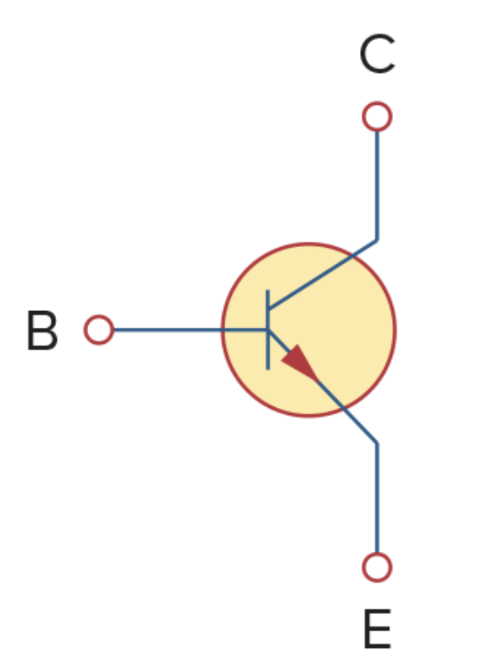 | 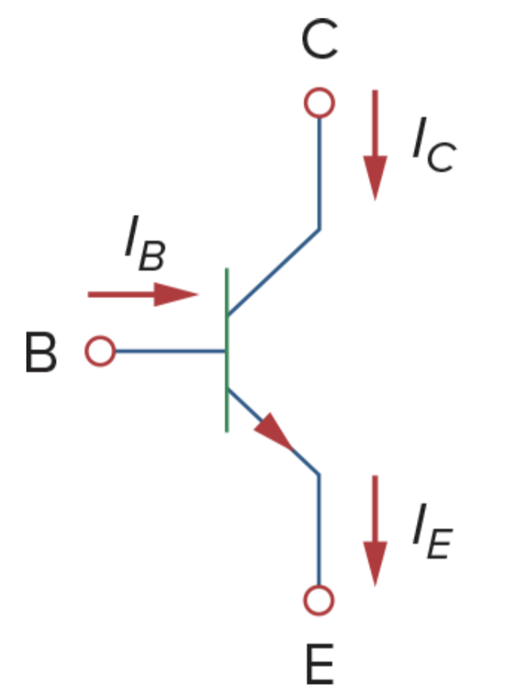 |
|---|---|
- The basic rules of BJT: \(I_C=\beta I_B\)
- To use the nodal analysis method on BJT, we can change it to the equivalent model below:
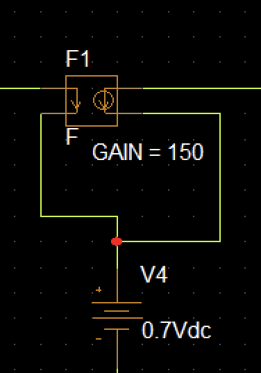